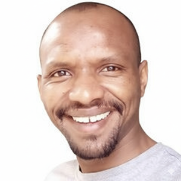
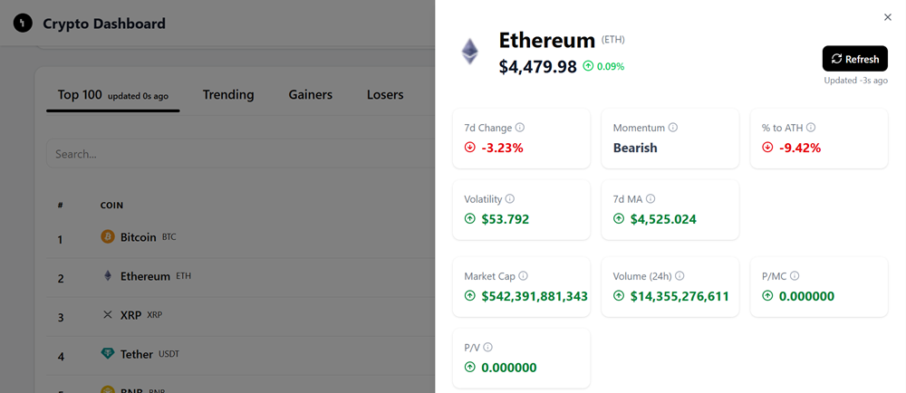
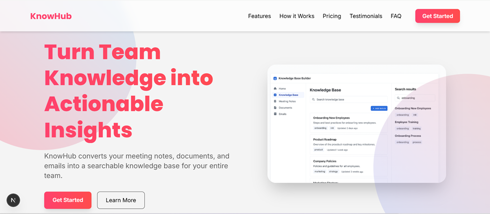
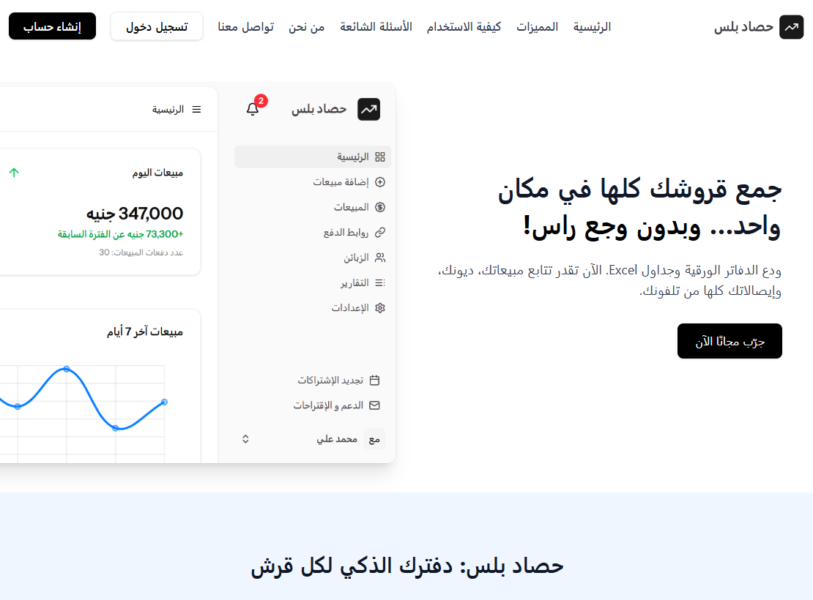
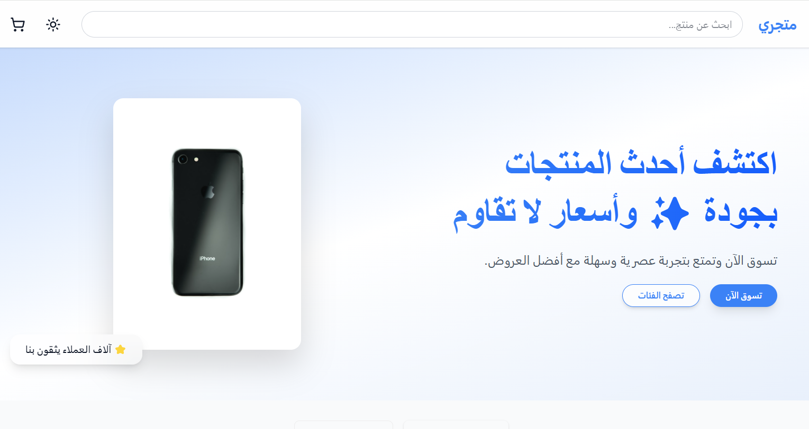
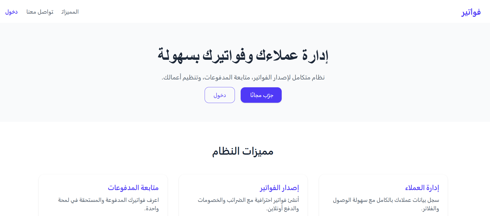

A real-time cryptocurrency dashboard built with Next.js 15 and the CoinGecko API. Features include live updates, detailed coin sheets, and an interactive 7-day price chart.
Technologies: Next.js 15, React, TypeScript, shadcn/ui, TailwindCSS, Chart.js, CoinGecko API

A modern, responsive landing page for a fictional SaaS product. Built with Next.js 15, Tailwind CSS 4, and designed with structured sections, hero, features, pricing, FAQ, and testimonials.
Technologies: Next.js 15, TailwindCSS 4, TypeScript, React.js

Cloud-based platform for small businesses in Sudan, providing sales, receipts, and financial management with real-time reporting and mobile-friendly design.
Technologies: Laravel 12, Vue.js 3, Inertia.js, TailwindCSS, MySQL, Docker

Arabic RTL e-commerce store with dynamic product listings, live shopping cart, simulated checkout, and responsive design.
Technologies: Laravel 12, Vue.js 3, Inertia.js, TailwindCSS, MySQL, Docker

User-friendly invoicing platform with client management, invoice generation, payment tracking, and expense reporting.
Technologies: Laravel 12, Vue.js 3, Inertia.js, TailwindCSS, MySQL, Docker
Built and launched a cloud-based sales and accounting platform. Developed secure backend APIs, modular frontend components, and real-time reporting. Managed cloud infrastructure for high performance.
Skills: Laravel, Vue.js, Inertia.js, MySQL, Docker, SaaS
Developed platform features including Amazon Payment Services and Stripe 3D-Secure integrations. Improved frontend performance and upgraded Laravel core.
Skills: Laravel, MySQL, Vue.js, Docker, Payment Gateways
Architected a social media management platform as a solo developer, integrating Instagram and Google Vision AI APIs. Managed full release lifecycle with Docker.
Skills: Laravel, Vue.js, Docker, Full-Stack Architecture
Developed and maintained robust REST APIs. Designed backend for headless CMS and optimized asynchronous processing with RabbitMQ. Built custom ETL tools.
Skills: Laravel, API Development, MongoDB, Microservices, RabbitMQ, Docker
Engineered mobile app integration APIs for ERP. Implemented CI pipelines and cross-platform notifications for iOS/Android.
Skills: Laravel, API Development, MySQL, AWS
Built and maintained a niche content platform with Laravel backend and Blade/HTML/CSS frontend. Managed deployments and SEO strategies.
Skills: Laravel, MySQL
Developed guest registration and event dashboards for exhibitions. Built KPI insights dashboards and managed web/database servers for performance.
Skills: Laravel, MySQL
Developed dynamic web applications and a custom job board platform. Focused on usability, maintainability, and responsive design.
Skills: PHP, MySQL, HTML, CSS, JavaScript
Full Stack Web Developer with 8+ years of experience, specializing in turning ideas into end-to-end digital solutions. I have strong expertise in front-end development with Vue.js and React.js, as well as back-end development using PHP and Laravel, including designing and integrating APIs.
My experience spans industries such as FinTech, e-commerce, and SaaS, where I’ve built secure, scalable web applications and systems, while also crafting intuitive, user-friendly interfaces. I’m dedicated to delivering projects with precision and professionalism, focusing on creating high-quality digital products that meet — and exceed — expectations.
Activities and societies: Member of Sudan Engineering Council